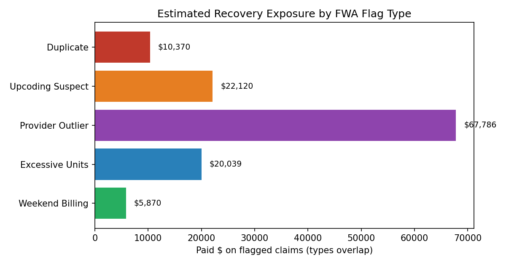
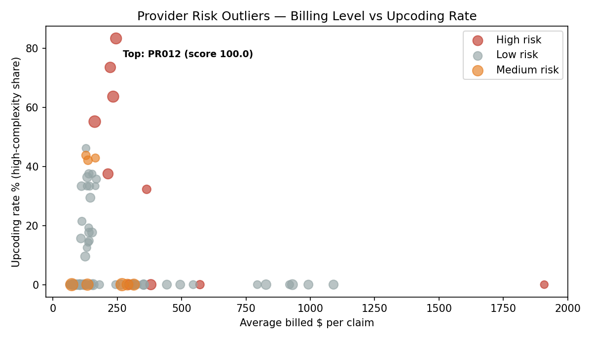
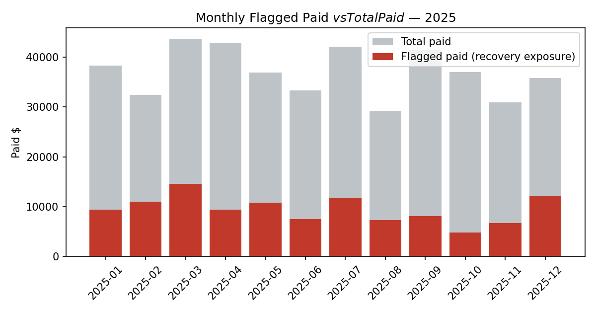
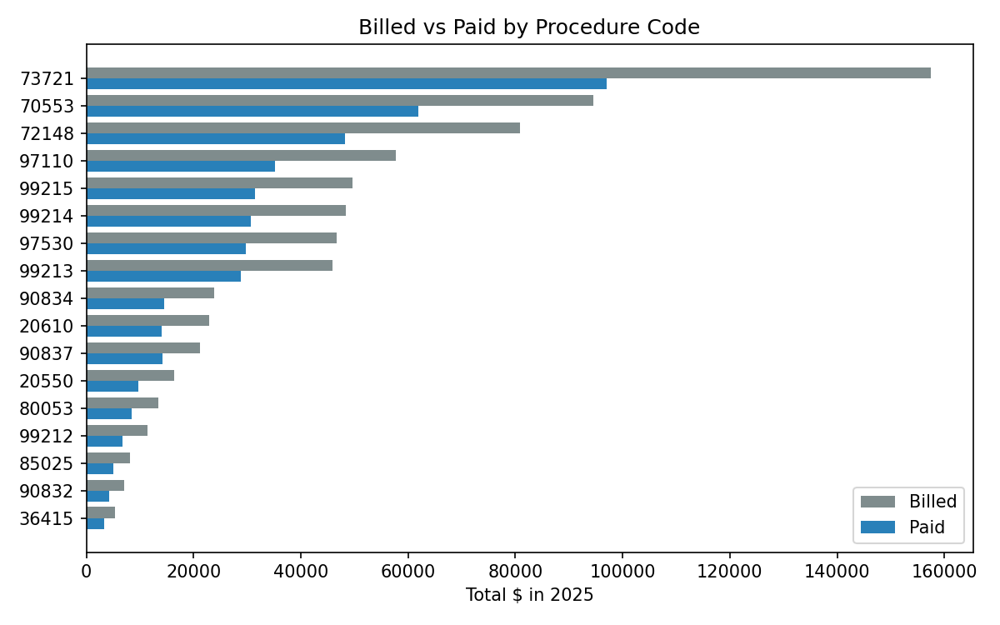

2,767Total Claims
$443,611.40Total Paid
454 (16.41%)Flagged Claims
$113,431.95Recovery Exposure
$10,370.23Duplicate Paid
125 claimsUpcoding Suspects
10 of 80High-Risk Providers
PR012 — 100.0/100Top Risk Provider
Recovery exposure by flag type

Provider risk outliers

Monthly flagged trend

Billed vs paid by procedure

Flag summary
| Flag type | Claims | Paid $ |
|---|---|---|
| duplicate | 45 | $10,370.23 |
| upcoding_suspect | 125 | $22,120.00 |
| provider_outlier | 184 | $67,785.66 |
| excessive_units | 60 | $20,039.33 |
| weekend_billing | 71 | $5,869.85 |
Types overlap — a claim can carry several flags. Total exposure (union) is $113,431.95.
Top 10 provider risk ranking
| Provider | Specialty | Region | Claims | Avg billed | Upcoding | Weekend | Flagged | Risk score | Tier |
|---|---|---|---|---|---|---|---|---|---|
| PR012 | Primary Care | Northeast | 47 | $223 | 73.5% | 4% | 32 | 100.0 | High |
| PR041 | Psychiatry | South | 31 | $364 | 32.3% | 19% | 31 | 100.0 | High |
| PR029 | Internal Medicine | South | 53 | $234 | 63.6% | 9% | 31 | 100.0 | High |
| PR007 | Primary Care | West | 40 | $297 | 0.0% | 8% | 40 | 97.3 | High |
| PR031 | Internal Medicine | West | 44 | $214 | 37.5% | 7% | 34 | 85.3 | High |
| PR063 | Radiology | West | 25 | $1,909 | 0.0% | 4% | 25 | 82.1 | High |
| PR071 | Orthopedics | West | 52 | $245 | 83.3% | 8% | 25 | 70.7 | High |
| PR049 | Physical Therapy | South | 45 | $381 | 0.0% | 2% | 27 | 66.0 | High |
| PR048 | Psychiatry | Northeast | 58 | $163 | 55.2% | 3% | 32 | 60.2 | High |
| PR076 | Orthopedics | Northeast | 30 | $571 | 0.0% | 7% | 12 | 56.7 | High |
Largest flagged claims (review worklist)
| Claim | Provider | Procedure | Date | Billed | Paid | Flags |
|---|---|---|---|---|---|---|
| CLM000876 | PR063 | 72148 | 2025-04-22 | $3,346 | $2,629.36 | provider_outlier |
| CLM001522 | PR063 | 72148 | 2025-07-15 | $3,034 | $2,578.60 | provider_outlier |
| CLM000617 | PR063 | 70553 | 2025-03-19 | $4,456 | $2,495.92 | duplicate;provider_outlier |
| CLM000614 | PR063 | 70553 | 2025-03-19 | $4,456 | $2,495.92 | provider_outlier |
| CLM000095 | PR063 | 70553 | 2025-01-14 | $3,104 | $2,369.67 | provider_outlier |
| CLM002736 | PR063 | 70553 | 2025-12-27 | $2,545 | $2,152.35 | provider_outlier |
| CLM000312 | PR063 | 70553 | 2025-02-11 | $3,299 | $1,956.15 | provider_outlier |
| CLM001001 | PR063 | 73721 | 2025-05-07 | $2,991 | $1,945.24 | provider_outlier |
| CLM002732 | PR063 | 73721 | 2025-12-26 | $2,812 | $1,830.78 | provider_outlier |
| CLM000386 | PR063 | 73721 | 2025-02-19 | $2,410 | $1,648.46 | provider_outlier |
| CLM002066 | PR063 | 72148 | 2025-09-24 | $2,384 | $1,532.24 | provider_outlier |
| CLM000181 | PR063 | 73721 | 2025-01-24 | $1,813 | $1,454.37 | provider_outlier |
Key insights
- 454 of 2,767 claims (16.4%) tripped at least one FWA rule — $113,431.95 of paid dollars routed to review.
- Duplicates are the cleanest recovery: 45 duplicate copies, $10,370.23 paid on exact re-billings.
- Top risk provider PR012 scores 100.0/100 — avg billed per claim $222.97 vs a specialty peer median of $94.20.
- Provider-outlier claims carry the largest dollars ($67,786 paid), ahead of upcoding suspects ($22,120) and excessive units ($20,039).
- Outliers are investigation leads, not proof of fraud — route High tier to pre-payment review and record requests, then recalibrate thresholds with confirmed outcomes.